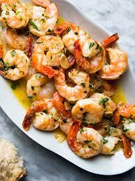

Shrimp

Ingredients
- 1lb of shrimp
- 4Tbls butter
- 2 teaspoons minced garlic
- the juice of one lemon
Directions
- Melt the butter in a large pan and melt over medium high heat. Add the shrimp.
- Cook for 3-5 minutes, stirring occasionally, until shrimp are pink and opaque.
- Add the garlic and cook for one more minute.
- Stir in the lemon juice and parsley, then serve.
Homepage